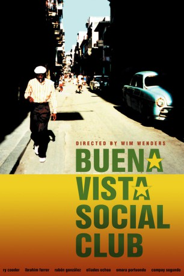

#3979 Buena Vista Social Club
Auszeichnungen: für 1 Oscars nominiert
 
 IMDB-Wertung: 7.6 / 10
IMDB-Wertung: 7.6 / 10  Tomatometer: 91
Tomatometer: 91  Metascore: 0
Metascore: 0 
Der amerikanische Komponist RY COODER nahm 1996 in Havanna mit legendären kubanischen Musikern das Album BUENA VISTA SOCIAL CLUB auf. Auch WIM WENDERS ließ sich von der weltweiten Euphorie um den `Club` anstecken und begleitete seinen Freund mit einem kleinen Filmteam nach Kuba. Entstanden ist ein einzigartiger Musikfilm, mit dem er den `Soneros` und ihrer Musik ein filmisches Denkmal gesetzt hat.
Jahr: 1999
Dauer: 100 Minuten
FSK:
Land: Deutschland Studio: Senator FilmTonspuren:
Untertitel: Deutsch,
Auflösung: 1080p (1920x1080) Größe: 7987 MB
Genre: Musik, Dokumentation
Regisseur:  Wim Wenders
Wim Wenders
Drehbuch: Benjamin Quabeck
Soundtrack:
Darsteller:
- Compay Segundo als Himself
- Ibrahim Ferrer als Himself
- Eliades Ochoa als Himself
- Ry Cooder als Himself
- Joachim Cooder als Himself
- Omara Portuondo als Herself
- Rubén González als Himself
- Orlando 'Cachaíto' López als Himself
- Amadito Valdés als Himself
- Manuel 'Guajiro' Mirabal als Himself
- Barbarito Torres als Himself
- Pío Leyva als Himself
- Manuel 'Puntillita' Licea als Himself
- Juan de Marcos González als Himself
- Octavio Calderon als Himself - Musician , uncredited
- Manuel Galbán als Himself - Musician , uncredited
- Heitor Goldflus als Man at a Manhattan Street , uncredited
- Carlos González als Himself , uncredited
- Salvador Repilado Labrada als Himself - Musician , uncredited
- Benito Suárez Magana als Himself - Musician , uncredited
- Alberto 'Virgilio' Valdés als Himself - Musician , uncredited
- Lázaro Villa als Himself - Musician , uncredited
Datei: X:\Musik\Buena Vista Social Club (1999, FSK, 1920x1080).mkv seit 08.07.2016
Festplatte: HD Serien(SU-Z)+Dokus+Musik
 Es gibt insgesamt 134 Filme in der Gruppe 'Musik'
Es gibt insgesamt 134 Filme in der Gruppe 'Musik'